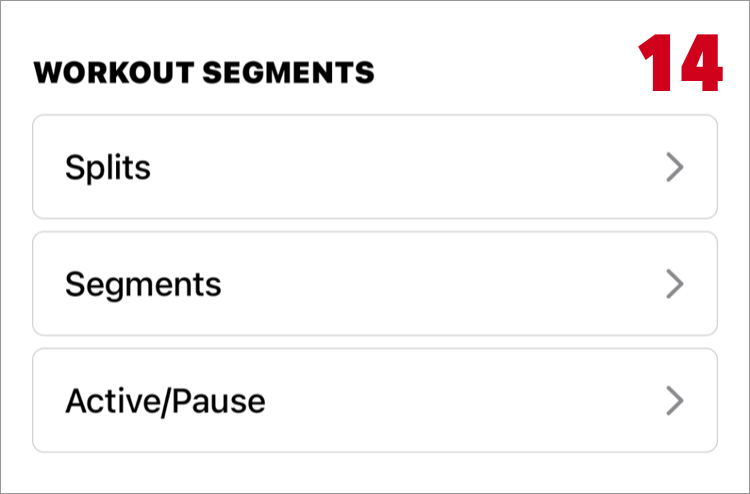

Help
Workout Detail

- 1. Edit
-
You can edit the workout name, activity type, location, time, active calories, and distance.
It is displayed only in the workout recorded by Zones. - 2. Delete
-
It is displayed only in the workout recorded by Zones.
Once deleted, data can not be restored. Please be careful. -
Workouts registered with other app can not be deleted. This is a limitation of iOS (HealthKit).
Please delete it with registered app or Apple's Health app. - 3. Share
- 4. Workout Date
- Date on which workout started.
- 5. Workout Time
- Workout start time - workout end time
- 6. Registered app (Source)
- 7. Workout Name
- If you have set a name in a custom workout, that name will be displayed.
Otherwise, the activity name is displayed.
8. Workout Summary
View your workout summary including heart rate zone times, duration, total calories and more.

- 9. Route Map
- It is a map of the moved location information. Displayed only when location information is recorded.
The color of the route line is the color of the heart rate zone.
Tap the map to see more detailed information on a large map.
Route Map does not Appear - 10. Heart Rate Zone
-
Shows time and percentage spent in heart rate zones.
This display requires heart rate data.

- 11. Overview
-
- Duration
- Workout duration excluding pause time.
- Active Calories
- It is the total of calories consumed during workout.
If the values are very different, try Re-collect sample data. - Distance
- It is the total distance traveled during workout.
If the values are very different, try Re-collect sample data. - Pace・Speed
- It is the speed calculated from "Duration" and "Distance".
However, the calculation is different in the following cases.
If lap is registered by swimming, use the total time of lap instead of "Duration".
If segment is registered by downhill ski / snowboard, the average of the segment speed is displayed. - The speed format can be changed in the settings.
- Intensity
- Intensity is a percentage of your maximum heart rate.
- Avg. METs
- METs is are a unit of exercise intensity that indicates how many times more energy is consumed compared to when resting is 1.
- Steps
- The total number of steps taken during your workout.
It will be recorded when you do running or a custom workout with steps. - Cadence
- The number of steps taken in one minute. Also called pitch. This value is calculated from "Steps".
- Running Power
- It is the amount of exercise in watts during running.
It reflects the intensity of your run and can give a sense of your effort as your speed or incline changes. - For more running form items, see Running Form Metrics.

- 12. Heart Rate
- 13. Heart Rate Recovery
- It is a value that compares the heart rate after 1 minute or 2 minutes after training and how much it has recovered (decreased).
Heart Rate Recovery

- 14. Workout Segments
-
It is displayed when the section information is in the workout.
You can see detailed information such as distance and speed for each section.
In order to display the distance and speed in section, distance data must be attached to the workout.
(Distance data is attached to the workout measured by Zones app.) - There are the following types of section.
-
- a. Split
- It is section information per km(mile) units.
It displays if the total distance is 1 km (mile) or more.
If distance is not connected to workout, split details can not be displayed.
If laps are registered by swimming, it is not displayed. - b. Lap
-
It is similar to split, but lap is the information recorded on the workout at the time of measurement.
It is registered when pool swimming, you can see swimming style.
Apple Document: HKWorkoutEventTypeLap - c. Marker
-
The marker is information on a certain timing.
Zones does not support marker recording, but information registered with double tap in Apple's "Workout" app is displayed as a marker.
Apple Document: HKWorkoutEventTypeMarker - d. Segment
-
Segments are registered for swimming, Downhill skiing, Snowboarding etc.
Apple Document: HKWorkoutEventTypeSegment - e. Active/Pause
- It is displayed when there is a pause event.
"Active" represents out of pause period.
Apple Document: HKWorkoutEventTypePause
Apple Document: HKWorkoutEventTypeResume
-
Information other than split will be registered in workout.
You can see original data at the Workout Detail > Workout Events on Apple Health app.
15. Charts
You can check detailed information on the chart with the elapsed time of the workout on the horizontal axis.
Tap the graph to see the values at that point in time.
Use sample data tied to your workout.
If not tied to a workout, get time-filtered data from Health.
- a. Heart Rate
- The color of the graph line is the color of the heart rate zone.
- b. Speed・Pace
- The speed in this graph is created from the "Distance" data.
- c. Elevation
- It uses the altitude included in the location information..
Depending on the GPS measurement environment, the altitude may not be accurate.
Also shown are cadence, running power, active calories, distance and step charts.
Which charts are displayed depends on your workout data.
16. Running Form Metrics
The Running Form Metrics was introduced in watchOS 9. It will be recorded if you outdoor running. It will not be recorded when you are not running, such as when you are walking. (confirmed with watchOS 9.0)
Running Man's animation changes depending on the measurements.
When you tap the graph, it becomes an animation using the measured value at that time.
- Vertical Oscillation
- It is the value that the body goes up and down per one step.
It is said that the lower the number, the better the running efficiency and the better the running form.
- Ground Contact Time
- It's the time your feet are on the ground per step. Experienced runners tend to have shorter times.
- Running Stride Length
- It is stride length per one step. Also called stride.
- Running Speed
- The running speed as measured by watchOS. Please note that the value is different from the speed calculated from the "Distance" data.
The cadence (spm) value displayed in the animation area is a value calculated from "Running Stride Length" and "Running Speed".